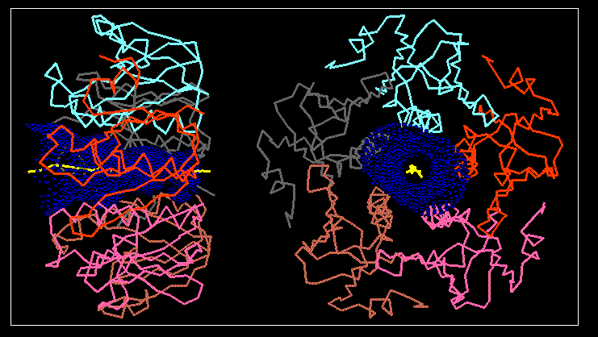

Pore Dimensions of Ion Channels: Application to cholera toxin B pentamer
The pore surface of cholera toxin B5

The pore surface of cholera toxin B5. For clarity only
a Calpha trace is shown for the protein, which is colour coded by
chain.
Two orthogonal views are shown: on the left hand side the channel direction
vector runs horizontal across the page whereas on the right the vector
is out of the page. The pore surface as revealed by the capsule option
of HOLE is shown as a dot surface. The surface is colour coded so that
places where there is not sufficient room to accomodate a water molecule
are coloured red, green shows where a single water molecule could be placed
and blue where two water molecules side by side could be located.
The yellow line marks the centre of the channel. Cholera toxin B5
can be seen to have a regular and wide pore. This picture was produced
with the aid of the programs
quanta and
qplot (part of the HOLE package).
If you have a suitable viewer (see
http://www.ch.ic.ac.uk/VRML/ for details) then
have a look at the
vrml version of this figure.
Oliver S. Smart
(last modified 23/9/96)